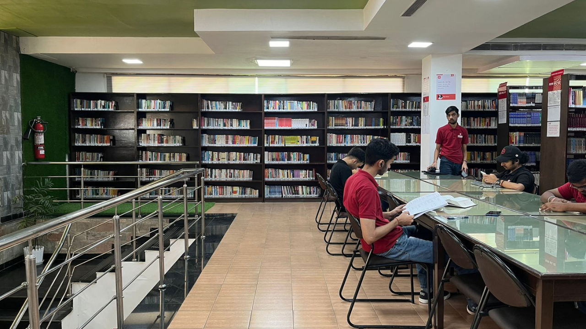

Chitkara University's Tagore Library provides a wide range of books to all learners.
Academic Resources: The library houses a vast array of academic texts across various disciplines, supporting students from primary education to higher studies. These resources are essential for research and coursework, ensuring learners have access to the latest knowledge and scholarly works.
Fiction and Literature: For those seeking leisure reading, the Tagore Library features a rich selection of fiction and literary works. This division includes classic novels, contemporary literature, and poetry, providing readers with opportunities to explore different cultures and perspectives through storytelling.
Reference Materials: The library also provides a comprehensive range of reference materials, including encyclopedias, dictionaries, and specialized databases. These resources are invaluable for learners conducting in-depth research or seeking quick information on specific topics.
Digital Resources: Embracing technology, the Tagore Library offers digital books and online learning platforms. This division enhances accessibility, allowing learners to engage with materials from anywhere, thus promoting a flexible and inclusive learning environment.
For more details:
Leave a comment